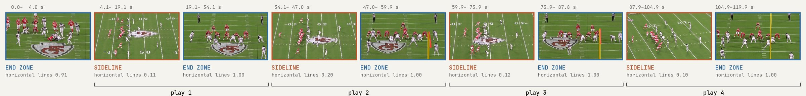
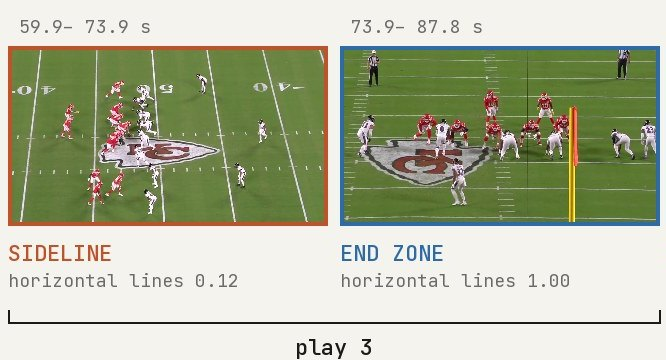
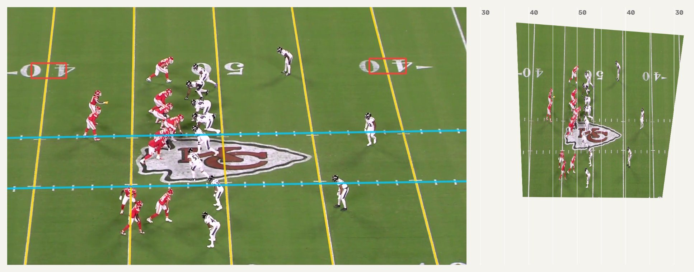
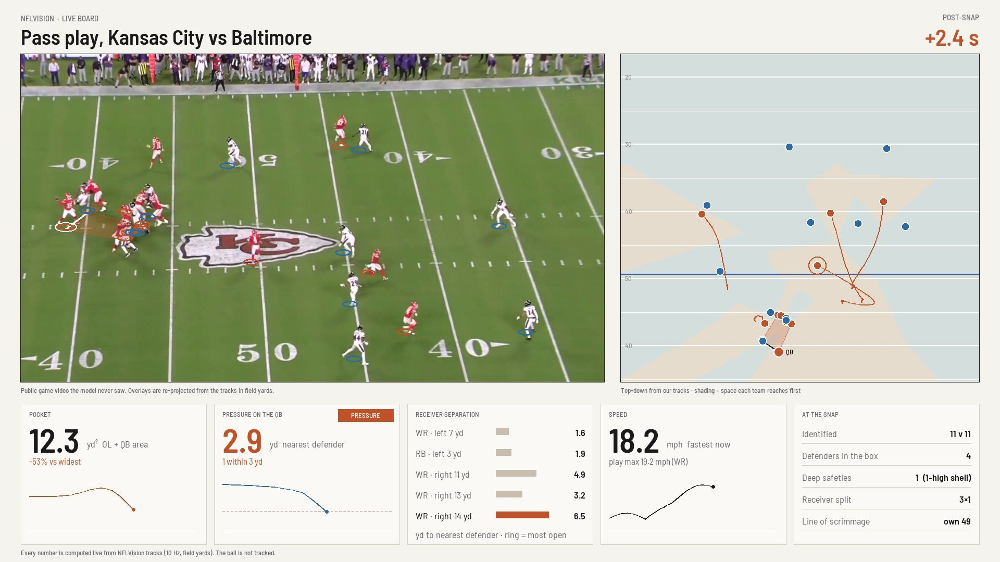

How it works
Six stages, one measurement each


01 / 06Plays and camera angles
The game is cut into shots; the angle of the painted lines tells the sideline camera from the end-zone camera.
 02 / 06
02 / 06Detection
An RF-DETR transformer, fine-tuned for football, finds every player, even inside the line, and ignores officials.

03 / 06Field registration
Yard lines, hash marks and the yard numbers it reads give a homography for every frame: pixels become yards.
 04 / 06
04 / 06Tracking
Players are followed on the field, not in the image, so the camera can pan without breaking the tracks.
 05 / 06
05 / 06Snap, line and roles
The snap from the motion of the tracks, the line of scrimmage, and the role of all 22 from a formation model.

06 / 06Analytics
Pocket, pressure, separation, space and speed, computed from the tracks as the play unfolds.